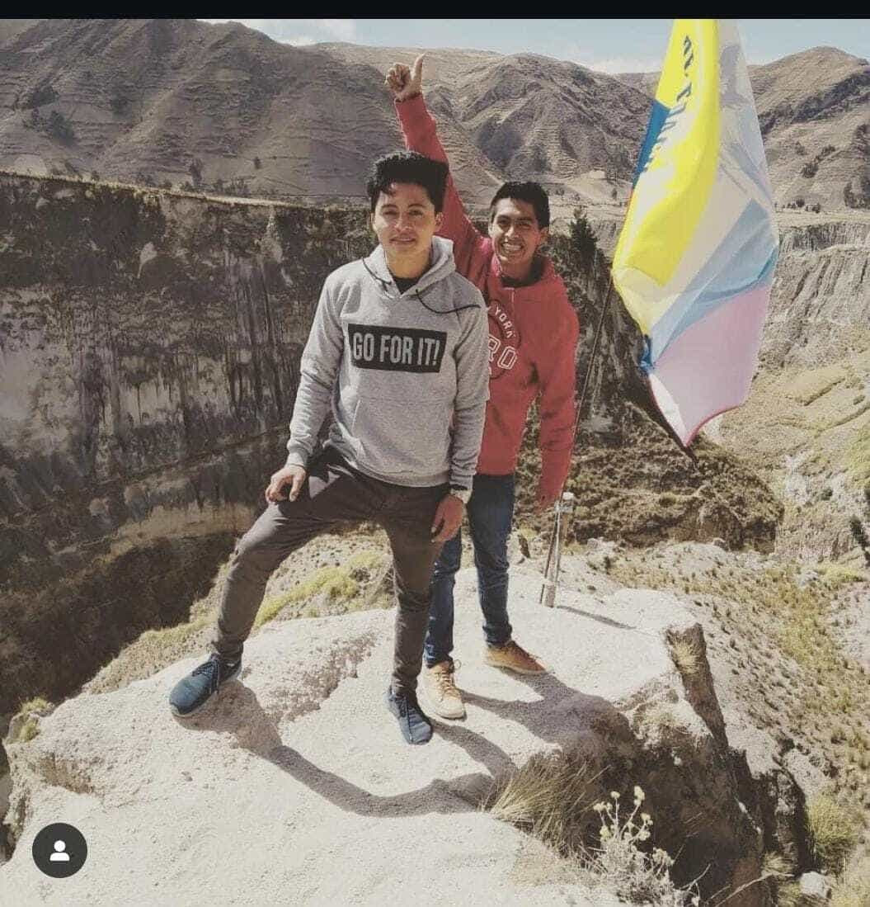

Home
About Me
I love learning new things and sharing that journey with others. Working in a team gives me energy because I enjoy listening, helping, and building on each person’s strengths. Sports keep me active and remind me of the value of discipline and teamwork, even though I sometimes struggle to stay focused. What keeps me motivated is the chance to contribute meaningfully and support those around me. I find joy in exploring new places and cultures, and I believe those experiences make me more open‑minded and empathetic. Most of all, I look forward to growing with my team, learning from their perspectives, and giving my best so our combined efforts lead to something we can all be proud of.
Student Photo

Web Certificate Courses
Total credits for courses listed above: